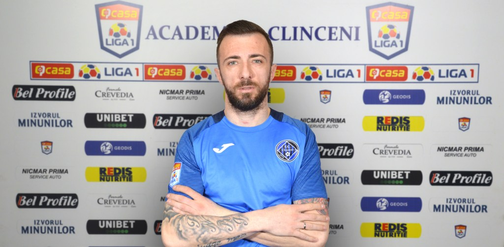

UN NOU ATACANT BULGAR LA ACADEMICA CLINCENI IANUARIE 25, 2021
Academica Clinceni a reușit al treilea transfer în această iarnă. Lotului echipei noastre s-a alăturat Martin Toshev. Un atacant bulgar în vârstă de 30 de ani. Toshev a jucat de-a lungul carierei în Bulgaria, Germania, Liban și Kazahstan.
Martin Toshev a semnat cu Academica Clinceni un contract valabil până la finalul sezonului.